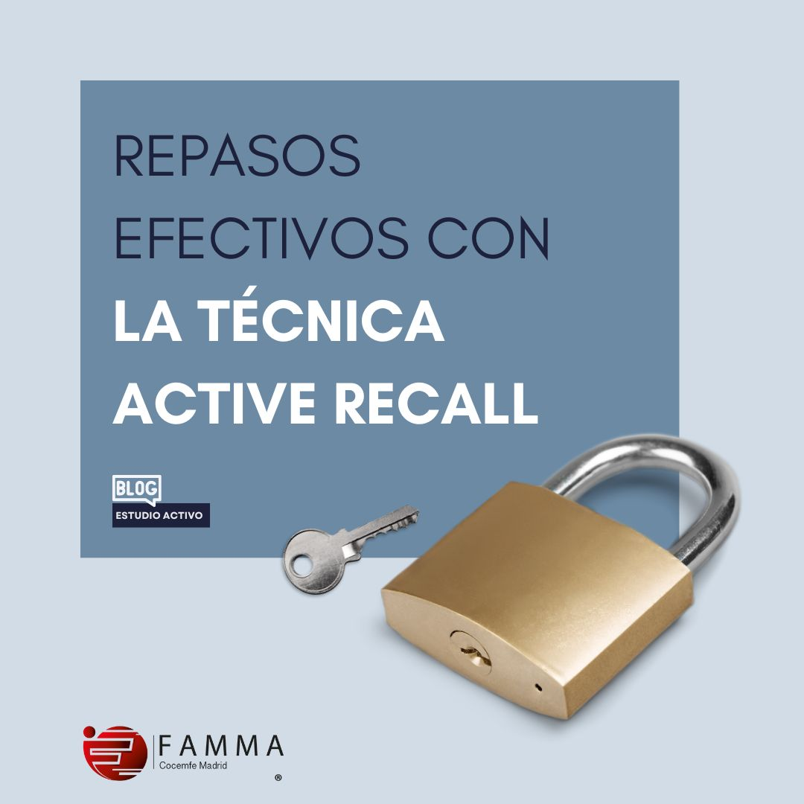
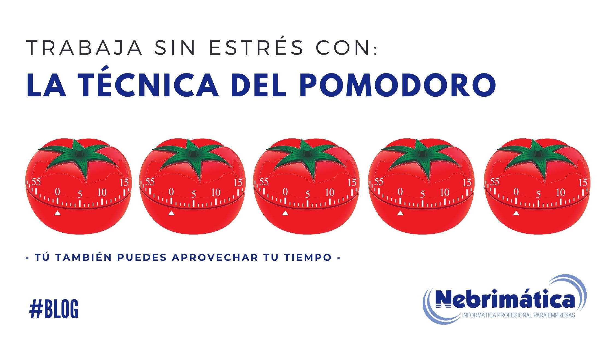
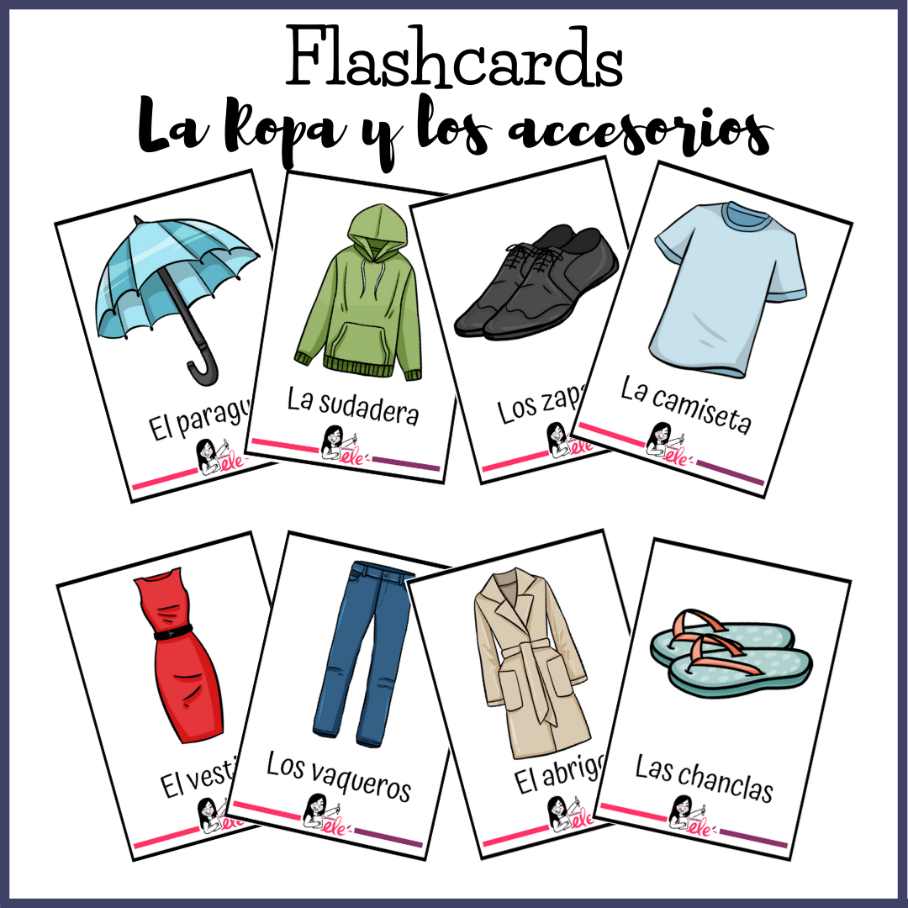
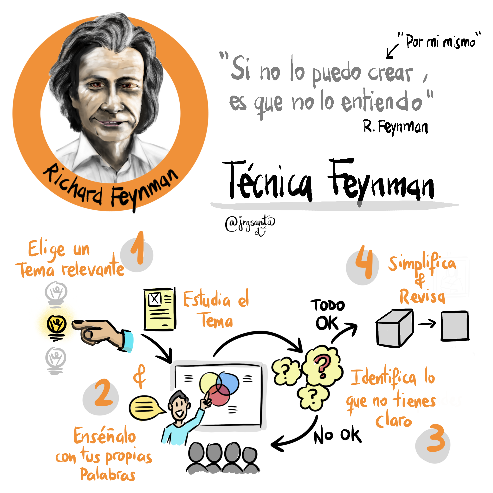

Los métodos de estudio son técnicas que facilitan el aprendizaje y
la retención de información. Ayudan a organizar, procesar y comprender
mejor los contenidos. Algunos métodos comunes incluyen tomar apuntes a mano,
usar mapas conceptuales, hacer resúmenes, practicar ejercicios, y tomar descansos durante el estudio
Metodos de estudio que puedes utilizar
Active recall
es una técnica de estudio que se centra en la memorización activa de los contenidos.
Se basa en el principio de que cuanto más activamente participes en el proceso de estudio, más probable será que la recuerdes en el largo plazo.
En lugar de simplemente leer información y tratar de memorizarla, debes tratar de consultar diferente fuentes, hacerte preguntas y reflexionar sobre la información,
lo cual te ayudará a fijarla mejor en tu mente aquello que estás estudiando.

Método Pomodoro
La técnica Pomodoro, o método Pomodoro, es una herramienta tanto de estudio como
de trabajo. De hecho, como forma más precisa de definición, podemos decir
que es una metodología de productividad. La base de esta técnica consiste
en dividir el tiempo en periodos de 25 minutos. Ni un minuto más, ni un minuto menos.

Flashcards
Las tarjetas de memoria suelen tener dos caras: una con la pregunta y otra con la información sobre ella. Pueden incluir nombres, vocabulario, conceptos o procedimientos y, por lo general, suelen agruparse en varias categorías de información.
El uso de tarjetas de memoria es un método de autoevaluación muy eficaz, ya que el acto de repetición te puede ayudar a descubrir qué información recuerdas fácilmente y cuál necesita un esfuerzo adicional. Además, desde el punto de vista de la gestión del tiempo, las tarjetas te permiten aprovechar momentos del día cortos para estudiar o integrarlas en sesiones más largas.

Método de cornell
El método cornell es una técnica para tomar apuntes.
Se trata de un método creado en los años 50 del siglo pasado.
Su artífice fue un profesor de la Universidad de Cornell, de ahí el nombre, concretamente Walter Pauk, quien creó una sencilla plantilla que permitía a sus alumnos ser mucho más eficaces en las clases.
Método Feynman
El Método Feynman es una técnica de aprendizaje y estudio que se basa en la idea de que la mejor forma de comprender un concepto es poder explicarlo de manera sencilla, como si se estuviera enseñando a alguien más, según Grupo Aspasia.
Este método, desarrollado por el físico Richard Feynman, ayuda a identificar lagunas en el conocimiento, fortalecer la comprensión y mejorar la retención a largo plazo.

Recomendaciones
Importancia de los Métodos de estudio
Las técnicas de estudio se consideran estrategias de aprendizaje que permiten a los alumnos obtener los mejores resultados a partir del desarrollo de diferentes habilidades o aptitudes. Esto ayuda a afrontar correctamente las actividades académicas.
Lo mejor es enseñar técnicas de estudio a los niños desde los primeros cursos de Educación Primaria para que puedan ir adquiriendo dicha habilidad poco a poco y, así, evitar el fracaso escolar.
El éxito de las técnicas de estudio se basa en el orden, la constancia y en la creación de hábitos que permiten al niño actuar con mejor preparación frente a determinadas tareas asignadas.
¿Cuáles son las ventajas de aprender estos métodos de estudio?
Te permitirán comprender mejor: cada técnica está pensada para poder absorber al máximo los conceptos a estudiar.
Ahorrarás tiempo: cada una de estas técnicas busca optimizar el tiempo dedicado al estudio. Lo logran enfocándose solamente en aquello que es más importante a la hora de estudiar.
Automatizarás el proceso de estudiar: cuando domines las técnicas de aprendizaje, no te detendrás a pensar en cómo estudiar. Simplemente identificarás la mejor manera de aprender un material y aplicarás la técnica que corresponde.